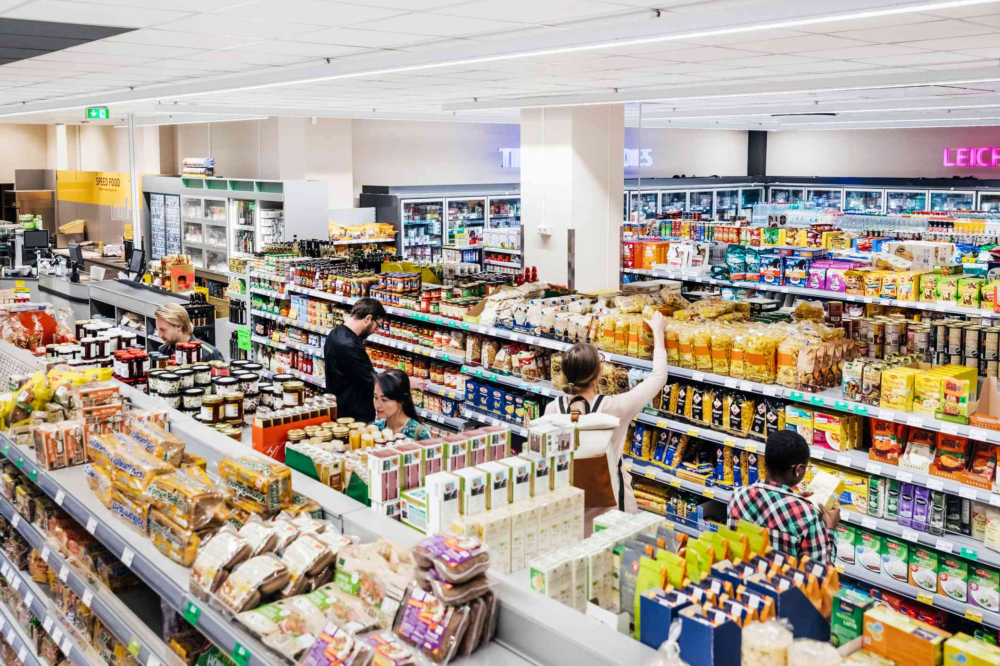

SUPERMARKET
Supermarkets are large retail stores that offer a wide range of food and household products, typically organized into aisles for easy navigation. They emerged in the early 20th century, with Piggly Wiggly in 1916 being the first self-service grocery store. Supermarkets revolutionized shopping by providing a one-stop location where customers could select their own products, leading to greater convenience and efficiency. Over time, they have evolved with the introduction of innovations like barcode scanning and the rise of large chain stores, becoming a central part of modern consumer culture.
